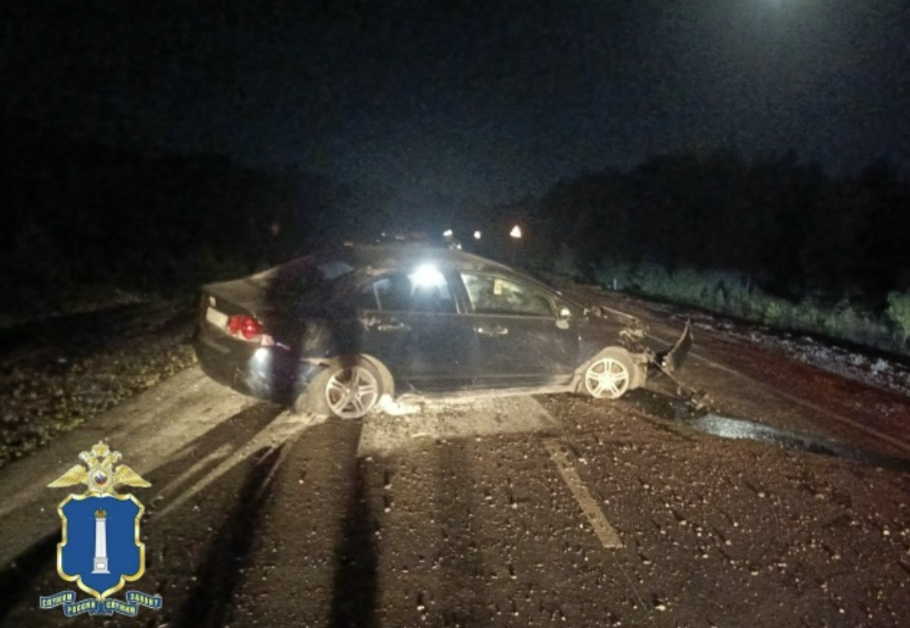
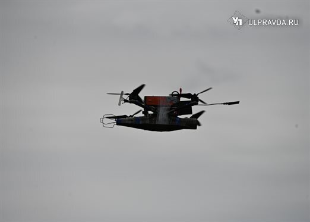
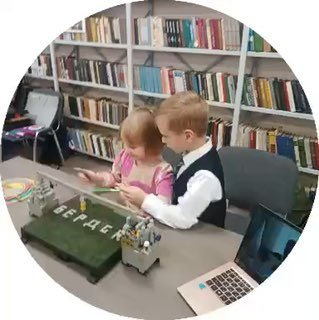

Что-то горит на Ливанова 22 . Спецслужбы на месте.
НовостьПо данным источника
Уточнить порядок назначения компенсаций можно по бесплатному номеру Единого социального телефона: 8-800-350-46-46. Жителям, которым нужна психологическая поддержка, доступны телефоны 8 (8422) 22-99-40 и круглосуточная линия Центра помощи семье и детям: 8 (8422) 42-00-25.…

👉 Узнать условия и получить специальное предложение 📞 +7 (8422) 78-21-39 📍 Ульяновск, Московское шоссе, 5Б Ежедневно с 08:00 до 20:00 Реклама.…

На Карла Маркса и Азовской дорожники обследуют поврежденный асфальт в местах падения обломков.…


Музыкальные видеоклипы» получила работа «Комплекс полноценности — Мой город». Третье место в категории «Короткометражные фильмы.…


В старину этот день посвящали плодородию и богу Велесу: благодарили природу и богов за урожай, накрывали столы, пекли пироги с капустой и брусникой и украшали дом веточками рябины — чтобы отпугнуть злых духов и сохранить благополучие.…

Во время обыска у жителя Димитровграда изъяли пистолет конструкции Макарова, пять патронов калибра 9 мм, винтовку ТОЗ-17 и ещё 18 патронов.…


В 2026 году на конкурс поступило 712 проектов из 70 регионов страны, а в финал отобрали 245 работ.…

Он также посетил второй корпус гимназии №21, где сейчас оказывают помощь ульяновцам.…

Одним из ключевых направлений станет федеральная поддержка интересов регина.…

Директор гимназии практически собственными силами взяла организацию в свои руки.…

Прикрепляю кусочек клипа на трек «Камнем на сердце» от группы «Мелекесс», чьё творчество в последнее время — моя личная лазейка во что-то светлое из нашего чего-то бесконечно мрачного.…

Прощание состоится 27.09.2026 в Ритуальном комплексе «Память» по адресу пр-т Автостроителей 86/3 с 10.00., отпевание с 10.30 до 11.00.…

Жителей приглашают принести растения, выращенные на дачах и в садах, и создать из них букеты и декоративные композиции.…

Открыт прием граждан по оказанию материальной помощь (в списках около 150 человек).…

По поручению губернатора Алексея Русских специалисты органов социальной защиты населения формируют списки пострадавших семей для последующего выделения адресной финансовой помощи из средств областного бюджета.…


По словам мэра, 48 специалистов планируют завершить работы в течение суток.…

24 сентября на дорогах Ульяновска работало больше 100 единиц техники.…
Для этого задействуем 7 единиц спецтехники и 48 работников.…

Дорожно-коммунальные службы Ульяновска приступили к ликвидации повреждений городской инфраструктуры после утренней атаки беспилотников.…

Вместе с этим они, по всей видимости, что-то разбили. А вот что послужило причиной конфликта — загадка.…

От полученных травм девушка скончалась по дороге в больницу. У неё взяли кровь на анализ.
Девушка скончалась по дороге в больницу.…



Будьте бдительны! «В социальных сетях пишут, что на заводе «Искра» произошла утечка ядовитых веществ.…

Делюсь с вами актуальным видео прямо с площадки — атмосфера потрясающая. Итоги обязательно подведём позже, всё расскажем и покажем.…


По информации Минздрава: 🔹 Трое взрослых госпитализированы 🔹 Четверо проходят лечение амбулаторно 🔹 Все пациенты находятся в удовлетворительном состоянии, серьёзных травм нет 🔹 Медучреждения полностью обеспечены необходимыми медикаментами ⚠️ Важно!…


По предварительным данным, во втором корпусе гимназии № 21 взрывной волной выбило несколько стекол.…

В целях безопасности там же перекрыто движение на ряде улиц.…

Для людей развёрнут пункт временного размещения в гостинице «Волга» с горячим питанием, сообщил Алексей Русских.…
Ничего по этому фильтру в ленте нет — показать все материалы.
Возник 15.09, пик 15.09 — сюжет держали 34 источника. Полная дуга — в недельнике.